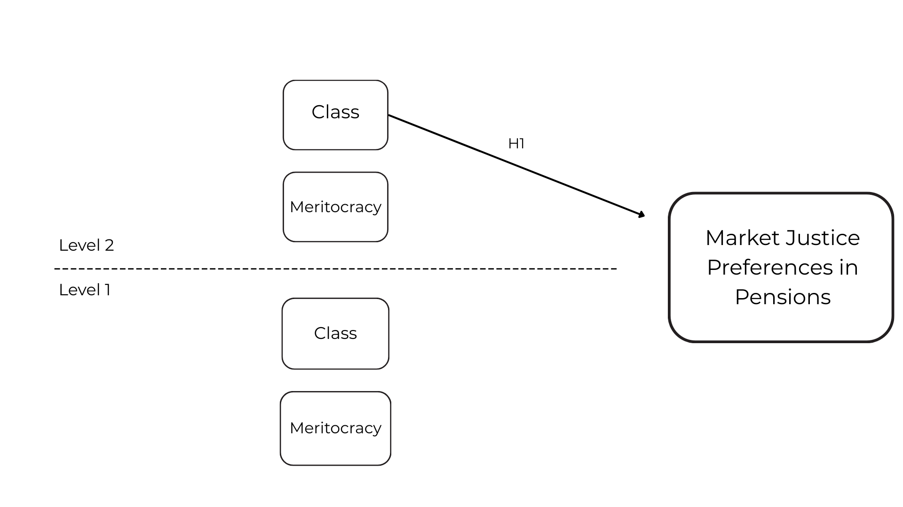
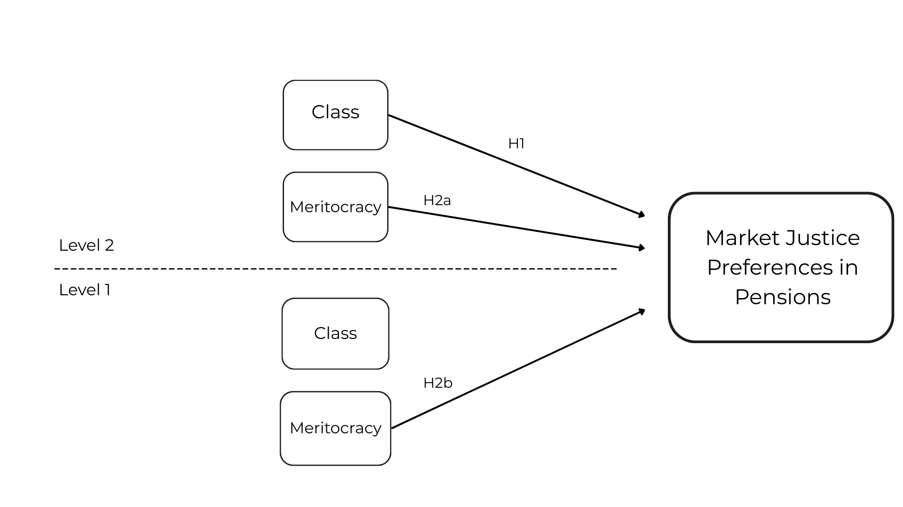
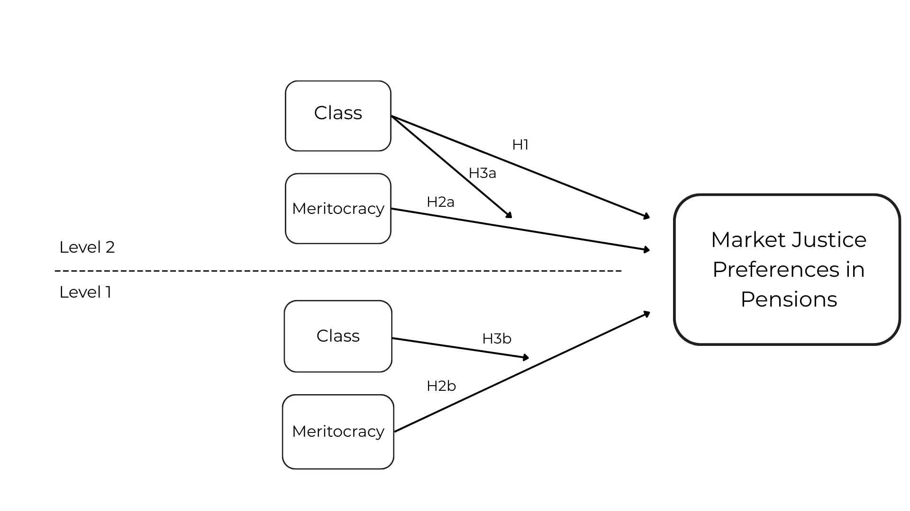
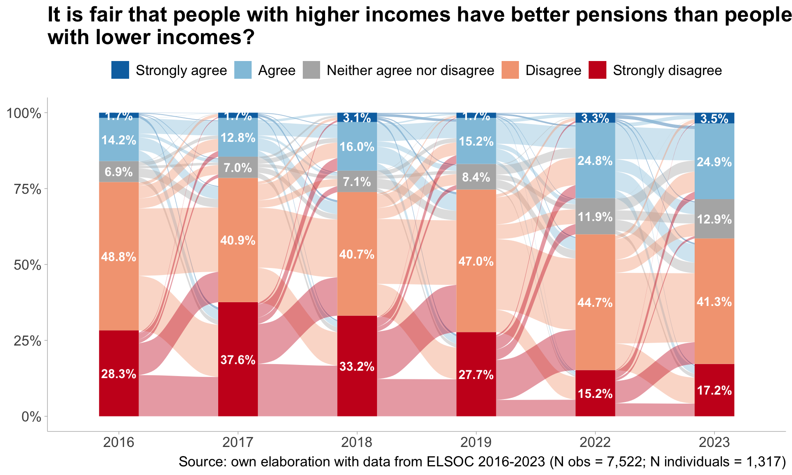
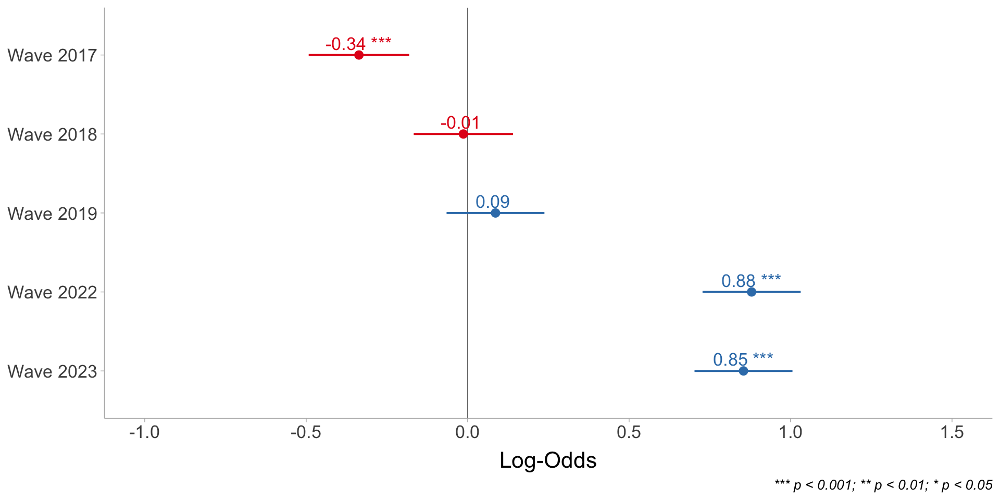
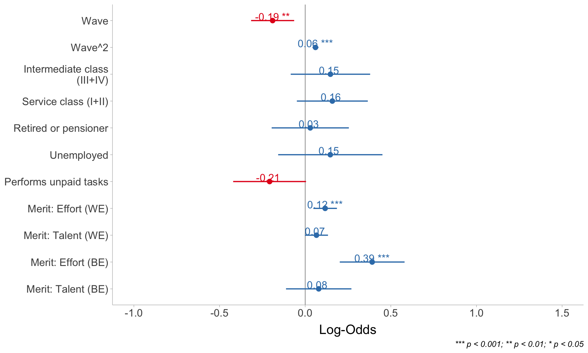
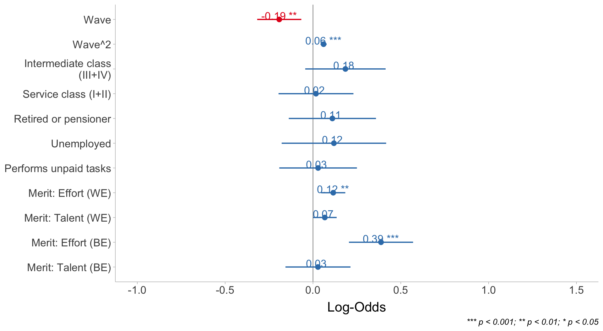
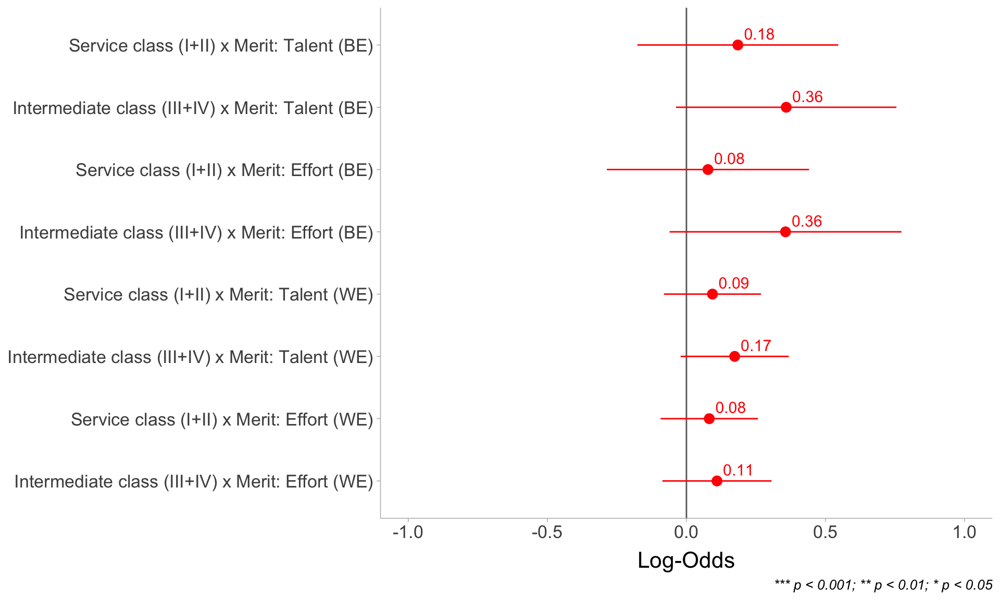

Justification trajectories for pension inequality in Chile (2016–2023)
The role of social class and beliefs in meritocracy
Juan Carlos Castillo, René Canales, Andreas Laffert &
Tomás Urzúa
Department of Sociology, University of Chile
In_equality Conference | Panel 17: Meritocracy and Inequality Beliefs - April 2026, Universität Konstanz
Research project
Project

ANID/FONDECYT N°1250518 2025-2028 - Market Justice and Deservingness of Social Welfare
Objective: Analyze market justice preferences in Chile, their evolution over time, and their relation to welfare deservingness
Main argument: Chile’s highly commodified welfare system strengthens meritocratic deservingness beliefs, thereby increasing preferences for market justice relative to less commodified contexts
Research design:
- Comparative and longitudinal data analysis
- Original survey
- Survey experiments
- Legislative debates on pensions
Team
Juan Carlos Castillo (PI)

Andreas Laffert (RA)

Tomás Urzúa (RA)

René Canales (RA)
Agenda
Peer-reviewed Articles
- Castillo, J. C., Canales Sellés, R., Laffert, A., & Urzúa, T. (2026). Justification trajectories for pension inequality in Chile (2016–2023): the role of social class and beliefs in meritocracy. Frontiers in Sociology, 11, 1771856. https://doi.org/10.3389/fsoc.2026.1771856
Castillo, J. C., Iturra, J., & Carrasco, K. (2025). Changes in the Justification of Educational Inequalities: The Role of Perceptions of Inequality and Meritocracy During the COVID Pandemic. Social Justice Research. doi.org/10.1007/s11211-025-00458-0
Castillo, J. C., Salgado, M., Carrasco, K., & Laffert, A. (2024). The Socialization of Meritocracy and Market Justice Preferences at School. Societies, 14(11), 214. doi.org/10.3390/soc14110214
Forthcoming
- Stability and comparability of meritocratic beliefs in school-age students: A measurement invariance approach across time and cohorts. Andreas Laffert, Juan Carlos Castillo, René Canales, Tomás Urzúa & Kevin Carrasco. Submited.
- Pensions’ market justice and meritocracy: A latent class approach. Andreas Laffert, Tomás Urzúa, Juan Carlos Castillo & René Canales.
Background
The problem
- Privatization and marketization of public goods, welfare policies, and social services (Gingrich, 2011; Streeck, 2016)
- Changes in the institutional architecture of the welfare state; expansion of market logics (Busemeyer & Iversen, 2020; Ferre, 2023)
- This economic order is reflected in a specific moral economy and policy feedback dynamics (Campbell, 2020; Fernandez & Jaime-Castillo, 2013; Mau, 2015)
Market justice preferences (Castillo et al., 2025; Koos & Sachweh, 2019; Lindh, 2015; busemeyer_skills_2014?)
The Chilean case
- Economic growth alongside high inequality (Flores et al., 2020; Llorca-Jaña & Miller, 2021)
- Rigid relative mobility and strong closure at the top (López-Roldán & Fachelli, 2021; Torche, 2014)
- Deep privatization and commodification of social reproduction domains, combined with strong state dependence (Madariaga, 2020; boccardo_30_2020?)
- Pensions: an individual capitalization system administered by private pension funds (AFPs); covers ~11 million contributors, but 27% of the labor force remains excluded due to informality (superintendenciadepensiones_estadisticas_2024?)
- Pension-related social conflict (Somma et al., 2021) and contested system legitimacy (“not with my money”) (Canales Cerón et al., 2021; Castillo et al., 2025)
Market justice preferences
Lane (1986): market justice vs. political justice
Normative beliefs that legitimize the idea that access to essential social services—such as healthcare, education, or pensions—should be determined by market-based criteria (Lindh, 2015, p. 895)
Measurement: assessing whether individuals consider it fair that access to these services depends on income (Castillo et al., 2025; Kluegel et al., 1999; Lindh, 2015)
Factors associated with market justice
Individual
- Socioeconomic status—income, education, and occupation (Busemeyer & Iversen, 2020; Koos & Sachweh, 2019; Lindh, 2015; Svallfors, 2007)
- Perceptions of inequality and meritocracy (Castillo et al., 2025)
- Economic conservatism/liberalism (lee_fairness_2023?)
Contextual
- Social spending (Busemeyer & Iversen, 2020; immergut_it_2020?; busemeyer_skills_2014?)
- Economic inequality (Koos & Sachweh, 2019)
- Degree of privatization and market regulation (Koos & Sachweh, 2019; Lindh, 2015)
This study
Analyze the relationship between social class and preferences for market justice in pensions in Chile, and how these evolve over time
Examine the role of meritocracy in shaping the relationship between class and preferences for pension market justice
Hypotheses
Hypotheses

Hypotheses

Methodology
Data
ELSOC (COES): a representative panel survey of the urban adult population in Chile, based on a probabilistic, stratified, clustered, and multistage sampling design across large and small cities
Period: six waves (2016, 2017, 2018, 2019, 2022, and 2023)
Attrition 2016→2023: ~ 40%
Analytical sample (balanced 6-wave panel):
- N = 5,755 observations (level 1) nested within
- N = 1,027 individuals (level 2)
Estimation strategy
Cumulative link mixed models (CLMM):
Panel structure: repeated observations (level 1) nested within individuals (level 2)
Models both within-person (WE) and between-person (BE) effects; includes random effects (intercept and time slope)
WE/BE decomposition (person-mean centering):
- Within: \(X^{WE}_{it}= X_{it}-\bar{X}_i\)
- Between: \(X^{BE}_{i}=\bar{X}_i\)
Formally:
\[\begin{aligned} \eta_{it} = \beta_{0}+ \beta_{1}\,\text{tiempo}_{it} +\beta_2\,\text{meritocracia}^{WE}_{it} +\beta_3\,{meritocracia}^{BE}_{i} +\beta_4\,\mathrm{EGP}_i + \end{aligned}\]
\[\beta_5\,(\mathrm{EGP}_i\!\times\! \text{meritocracia}^{WE}_{it}) +\beta_6\,(\mathrm{EGP}_i\!\times\! \text{meritocracia}^{BE}_{i}) +u_{0i}+u_{1i}\,\text{tiempo}_{it}\\\]
Dependent variable

Independent variables: Level 1
Meritocracy:
Operationalized through two components: effort and talent (Castillo et al., 2023; young_rise_1958?)
Measurement (Likert 1–5):
- “In Chile, people are rewarded for their effort.”
- “In Chile, people are rewarded for their intelligence and ability.”
Estimation of WE and BE effects (singer_applied_2009?; bell_explaining_2015?)
Independent variables: Level 2
Class position:
Operationalized using the Erikson-Goldthorpe-Portocarrero (EGP) class scheme (eriksonCASMINProjectAmerican1992?)
Measurement → collapsed three-class version:
- Service class (I+II)
- Intermediate class (III+IV)
- Working class (V+VI+VII)
Additionally, three categories outside the labor force are included: retirees, unemployed respondents, and unpaid work
Fixed at the first wave (i.e., time-invariant) → captures average between-person differences (BE = \(\bar X_{i}\))
Results
Models

- ICC = 0.23 between, 0.77 within
Models

Models

Models

Discusión y conclusiones
Discusión y conclusiones
Tiempo: las preferencias por justicia de mercado en pensiones han aumentado en los últimos años
Clase social: clases altas muestran mayor por justicia de mercado en pensiones que clases bajas (H1) (Lindh, 2015; Mau, 2015; Otero & Mendoza, 2024)
Meritocracia: creer que el esfuerzo es recompensado se asocia con más usticia de mercado (H2a y H2b) (Castillo et al., 2025)
Clase × Meritocracia: no hay evidencia de amplificación (H3a/H3b)
Artículo Aceptado en Frontiers in Sociology
Forthcomming: Castillo JC, Canales Sellés R, Laffert A and Urzúa T (2026) “Justification trajectories for pension inequality in Chile (2016–2023): The role of social class and beliefs in meritocracy”. Front. Sociol. 11:1771856.doi
Equipo
JC

Andreas

Tomás

René
Gracias por su atención
- Github del proyecto: https://github.com/jus-mer
Referencias
Busemeyer, M., & Iversen, T. (2020). The Welfare State with Private Alternatives: The Transformation of Popular Support for Social Insurance. The Journal of Politics, 82(2), 671–686. https://doi.org/10.1086/706980
Campbell, J. L. (2020). Institutional Change and Globalization. Princeton University Press. https://doi.org/10.2307/j.ctv131bw68
Canales Cerón, M., Orellana Calderón, V. S., & Guajardo Mañán, F. (2021). Sujeto y cotidiano en la era neoliberal: El caso de la educación chilena. Revista Mexicana de Ciencias Políticas y Sociales, 67(244). https://doi.org/10.22201/fcpys.2448492xe.2022.244.70386
Castillo, J. C., Iturra, J., Maldonado, L., Atria, J., & Meneses, F. (2023). A Multidimensional Approach for Measuring Meritocratic Beliefs: Advantages, Limitations and Alternatives to the ISSP Social Inequality Survey. International Journal of Sociology, 53(6), 448–472. https://doi.org/10.1080/00207659.2023.2274712
Castillo, J. C., Laffert, A., Carrasco, K., & Iturra-Sanhueza, J. (2025). Perceptions of inequality and meritocracy: Their interplay in shaping preferences for market justice in Chile (2016–2023). Frontiers in Sociology, 10, 1634219. https://doi.org/10.3389/fsoc.2025.1634219
Fernandez, J. J., & Jaime-Castillo, A. M. (2013). Positive or Negative Policy Feedbacks? Explaining Popular Attitudes Towards Pragmatic Pension Policy Reforms. European Sociological Review, 29(4), 803–815. https://doi.org/10.1093/esr/jcs059
Ferre, J. C. (2023). Welfare regimes in twenty-first-century Latin America. Journal of International and Comparative Social Policy, 39(2), 101–127. https://doi.org/10.1017/ics.2023.16
Flores, I., Sanhueza, C., Atria, J., & Mayer, R. (2020). Top Incomes in Chile: A Historical Perspective on Income Inequality, 1964–2017. Review of Income and Wealth, 66(4), 850–874. https://doi.org/10.1111/roiw.12441
Gingrich, J. R. (2011). Making Markets in the Welfare State: The Politics of Varying Market Reforms (1st ed.). Cambridge University Press. https://doi.org/10.1017/CBO9780511791529
Kluegel, J., Mason, D., & Wegener, B. (1999). The Legitimation of Capitalism in the Postcommunist Transition: Public Opinion about Market Justice, 1991-1996. European Sociological Review, 15(3), 33. Retrieved from https://www.jstor.org/stable/522731
Koos, S., & Sachweh, P. (2019). The moral economies of market societies: Popular attitudes towards market competition, redistribution and reciprocity in comparative perspective. Socio-Economic Review, 17(4), 793–821. https://doi.org/10.1093/ser/mwx045
Lane, R. E. (1986). Market Justice, Political Justice. American Political Science Review, 80(2), 383–402. https://doi.org/10.2307/1958264
Lindh, A. (2015). Public Opinion against Markets? Attitudes towards Market Distribution of Social Services – A Comparison of 17 Countries. Social Policy & Administration, 49(7), 887–910. https://doi.org/10.1111/spol.12105
Llorca-Jaña, M., & Miller, R. M. D. (2021). Historia económica de Chile desde la independencia. Santiago de Chile: RIL editores.
López-Roldán, P., & Fachelli, S. (Eds.). (2021). Towards a Comparative Analysis of Social Inequalities between Europe and Latin America. Cham: Springer International Publishing. https://doi.org/10.1007/978-3-030-48442-2
Madariaga, A. (2020). The three pillars of neoliberalism: Chile’s economic policy trajectory in comparative perspective. Contemporary Politics, 26(3), 308–329. https://doi.org/10.1080/13569775.2020.1735021
Mau, S. (2015). Inequality, Marketization and the Majority Class: Why Did the European Middle Classes Accept Neo-Liberalism? London: Palgrave Macmillan UK.
Otero, G., & Mendoza, M. (2024). The Power of Diversity: Class, Networks and Attitudes Towards Inequality. Sociology, 58(4), 851–876. https://doi.org/10.1177/00380385231217625
Somma, N. M., Bargsted, M., Disi Pavlic, R., & Medel, R. M. (2021). No water in the oasis: The Chilean Spring of 2019–2020. Social Movement Studies, 20(4), 495–502. https://doi.org/10.1080/14742837.2020.1727737
Streeck, W. (2016). How will capitalism end? Essays on a failing system. London New York, NY: Verso.
Svallfors, S. (Ed.). (2007). The Political Sociology of the Welfare State: Institutions, Social Cleavages, and Orientations (1st ed.). Stanford University Press. https://doi.org/10.2307/j.ctvr0qv0q
Torche, F. (2014). Intergenerational Mobility and Inequality: The Latin American Case. Annual Review of Sociology, 40(1), 619–642. https://doi.org/10.1146/annurev-soc-071811-145521